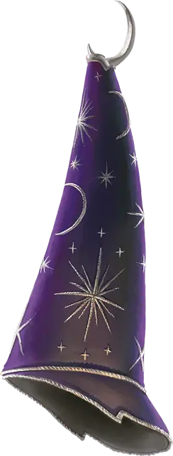

Шляпа волшебства
Hat of Wizardry
Чудесный предмет, обычный (требуется настройка волшебником)

Рекомендованная стоимость 50-100 зм
Эта старинная конусообразная шляпа украшена золотыми полумесяцами и звёздами. Пока она надета на вас, вы получаете следующие преимущества:
- Вы можете использовать эту шляпу как заклинательную фокусировку для своих заклинаний волшебника.
- Вы можете попытаться наложить заговор, которого не знаете. Заговор должен присутствовать в списке заклинаний волшебника, и вы должны преуспеть в проверке Интеллекта (Магия) Сл 10. При успехе вы накладываете заклинание. При провале и заклинание, и действие, которое было предназначено для накладывания заклинания, теряется. В любом случае вы не можете снова использовать это свойство, пока не завершите продолжительный отдых.